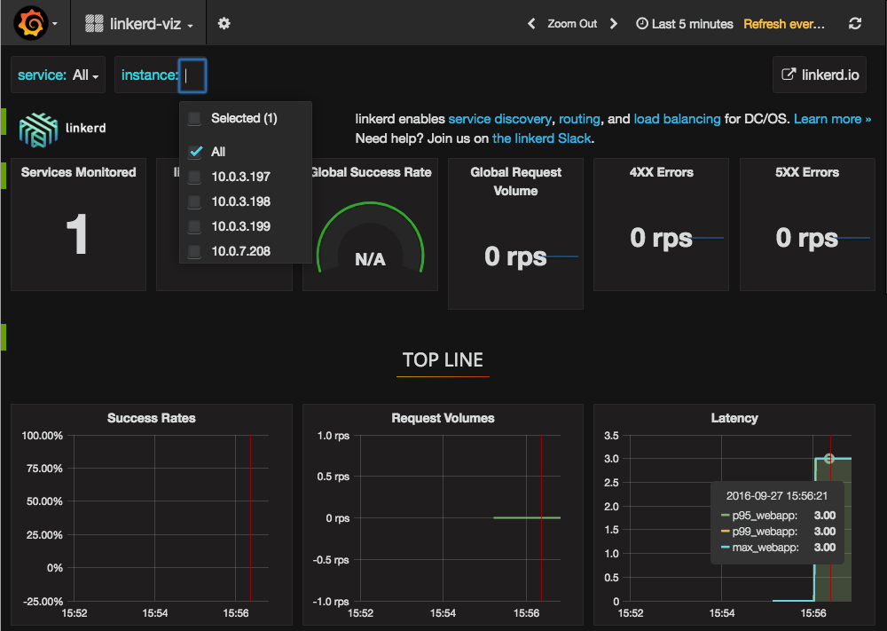
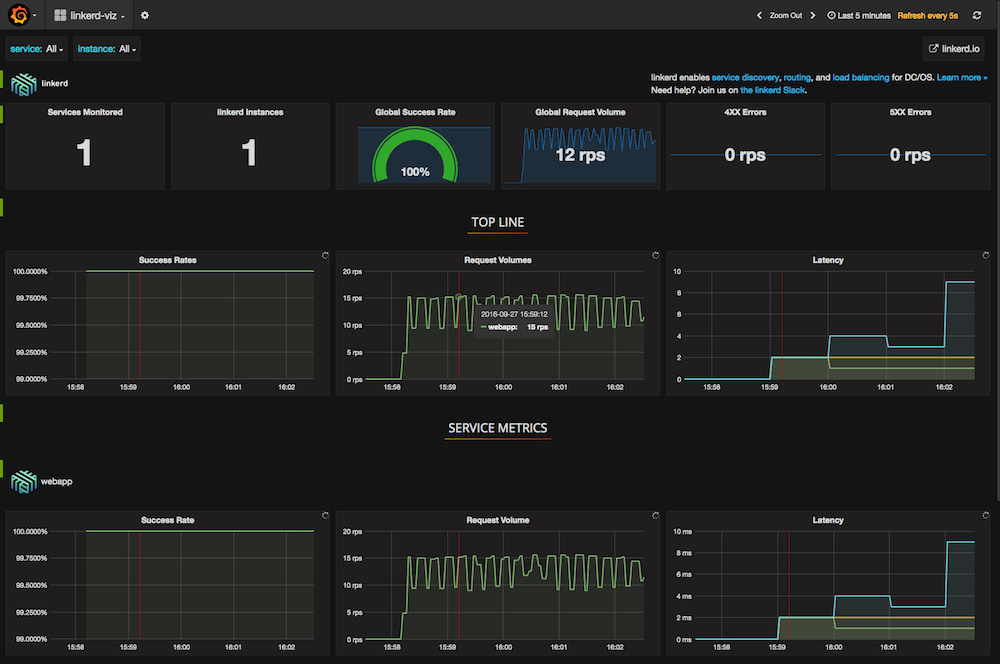

Interested in seeing a live demo? Join Buoyant CEO William Morgan on Tuesday, October 11th for a live webinar and demo of everything below. Register here to attend.
When building and deploying modern enterprise applications in a scheduled environment like DC/OS, one of the first questions you’ll face is how to do service discovery. But what exactly is service discovery, and how is it different from DNS?
In this article, we’ll define service discovery and show why it’s a first-class problem for scheduled environments. We’ll show you how— in 60 seconds or less—you can install a service mesh like linkerd and plug it directly into Marathon for service discovery. We’ll demonstrate how linkerd can track top-line service metrics (success rates, latency profiles, request volumes) with minimal effort. Finally, we’ll describe how you can extend linkerd’s service discovery to integrate with other systems like Consul, ZooKeeper, and etcd—all without having to change your application.
What is Service Discovery?
Service discovery is how your applications and services find each other. Given the name of a service, service discovery tells you where that service is: on what IP/port pairs are its instances running? Service discovery is an essential component of multi-service applications because it allows services to refer to each other by name, independent of where they’re deployed. Service discovery is doubly critical in scheduled environments like DC/OS because service instances can be rescheduled, added, or removed at any point, so where a service is is constantly changing. (For more background on Service Discovery, have a look at the DC/OS Service Discovery documentation.)
An analogous system to service discovery is DNS. DNS was designed to answer a similar question: given the hostname of a machine, e.g. www.mesosphere.com, what is the IP address of that host? In fact, DNS can be used as a basic form of service discovery, and DC/OS ships with Mesos-DNS out of the box.
Unfortunately, it can be difficult to use DNS for service discovery in practice. First, DNS is primarily used to locate services with “well-known” ports, e.g. port 80 for web servers, and extending it to handle arbitrary ports is difficult: while SRV records exist for this purpose, library support for them is spotty. Second, DNS information is often aggressively cached at various layers in the system (the operating system, the JVM, etc.), and this caching can result in stale data when used in highly dynamic systems like DC/OS. As a result, most systems that operate in scheduled environments rely on a dedicated service discovery system such as ZooKeeper, Consul, or etcd.
Fortunately for systems running in DC/OS, Marathon itself can act as source of service discovery information, eliminating much of the need to run one of these separate systems—at least, if you have a good way of connecting your application to Marathon. Enter linkerd!
Using linkerd for service discovery
linkerd is a service mesh for cloud-native applications. It provides a baseline layer of reliability for service-to-service communication that’s transparent to the application itself. One aspect of this reliability is service discovery.
For DC/OS users, linkerd is configured out of the box to do service discovery directly from Marathon. This means that applications and services can refer to each other by their Marathon task name. For example, a connection to http://myservice made via linkerd will be sent to an instance of the Marathon application myservice, independent of DNS. Furthermore, linkerd will intelligently load-balance across all instances of myservice, keeping up-to-date as Marathon adds or removes service instances.
The linkerd package in the DC/OS Universe repository installs a linkerd instance on each node in the cluster and configures it to act as an HTTP proxy. This means that most HTTP applications can use linkerd simply by setting the http_proxy environment variable to localhost:<linkerd port>, without code changes. (For non-HTTP applications, or situations where setting this environment variable is not viable, linkerd can still be used with a little more configuration work.)
Let’s walk through a quick demonstration of installing linkerd and using it for service discovery. After this step, we’ll also show you how, once it’s installed, you can also easily use linkerd to capture and display top-line service metrics like success rates and request latencies.
Installing linkerd
STEP 0: Prerequisites
You will need:
- A running DC/OS cluster.
- The DC/OS CLI installed.
STEP 1: Deploy a sample application
First, we’ll deploy a simple example application. Use the webapp.json example application (borrowed from this Marathon guide) from the DC/OS CLI as follows:
dcos marathon app add https://raw.githubusercontent.com/BuoyantIO/linkerd-examples/master/dcos/webapp.json
STEP 2: Install the linkerd universe package
We now have a working web server, though we have no clear way to discover or route to it. Let’s fix that by installing linkerd.
The only configuration we need at this point is the total number of nodes in the cluster. Use that number to run the following command:
$ dcos package install --options=<(echo '{"linkerd":{"instances":<node count>}}') linkerd
Where <node count> is the number of nodes in your DC/OS cluster. Voila! linkerd is now running on every node in your DC/OS cluster and is ready to route requests by Marathon task name.
To make sure everything is working, run this command, replacing <public_ip> with the address of a public node in your DC/OS cluster.
$ http_proxy=<public_ip>:4140 curl -s http://webapp/hello
Hello world
We’ve now routed a simple HTTP request to the Hello World app by using its Marathon task name. This works on all DC/OS nodes, whether public or private. In other words, all HTTP applications can now discover and route to each other by Marathon task name by using linkerd as an HTTP proxy.
STEP 3: Install the linkerd-viz Universe package
Now that we have a sample application and a means to discover and route to it, let’s take a look at how it’s performing! Is it receiving requests? Is it producing successful responses? Is it responding fast enough?
As a service mesh, linkerd understands enough about the service topology and requests to keep accurate, live statistics to answer these questions. We’ll start by installing the linkerd-viz Universe package:
dcos package install linkerd-viz
This package will install a basic dashboard on a public node on port 3000. Let’s take a peek by visiting http://<public_node>:3000.

You should see a dashboard of all your running services and selectors by service and instance. The dashboard includes three sections:
- TOP LINE. Cluster-wide success rate and request volume.
- SERVICE METRICS. One section for each application deployed. Includes success rate, request volume, and latency.
- PER-INSTANCE METRICS. Success rate, request volume, and latency for each node in your cluster.
Great! Now let’s add some load to the system and make our dashboard a bit more interesting:
export http_proxy=<public_node>:4140
while true; do curl -so /dev/null webapp; done

Note how the dashboard updates automatically to capture this traffic and the behavior of the systems—all without configuration on your end.
So there you have it. With just three simple commands, we were able to install linkerd on our DC/OS cluster, install an app, use linkerd for service discovery, and get instant visibility into the health of all our services.
Next Steps
In the examples above, we’ve used linkerd to talk to Marathon. But linkerd has a powerful routing language that allows you to use multiple forms of service discovery simultaneously, to express precedence or failover rules between them, and to migrate traffic from one system to another. All, of course, without the application having to be aware of what’s happening.
Even better, linkerd is already providing us with much more than visibility and service discovery. By using linkerd as a service mesh, we’ve actually enabled latency-aware load balancing, automatic retries and circuit breaking, distributed tracing, and more.
To read more about these features and how to take advantage of them in your application, take a look at the comprehensive linkerd documentation. linkerd also has a thriving community of users and developers. If you get stuck, need help, or have questions, feel free to reach out via one of the following channels:
- The linkerd slack
- The linkerd-users mailing list
- Email us directly at support@buoyant.io